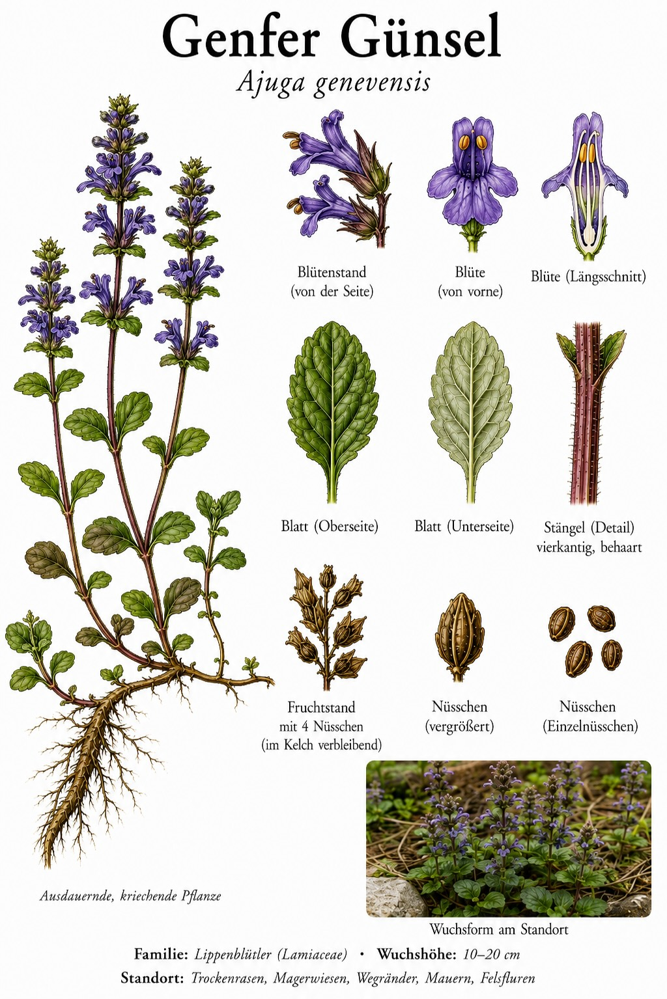
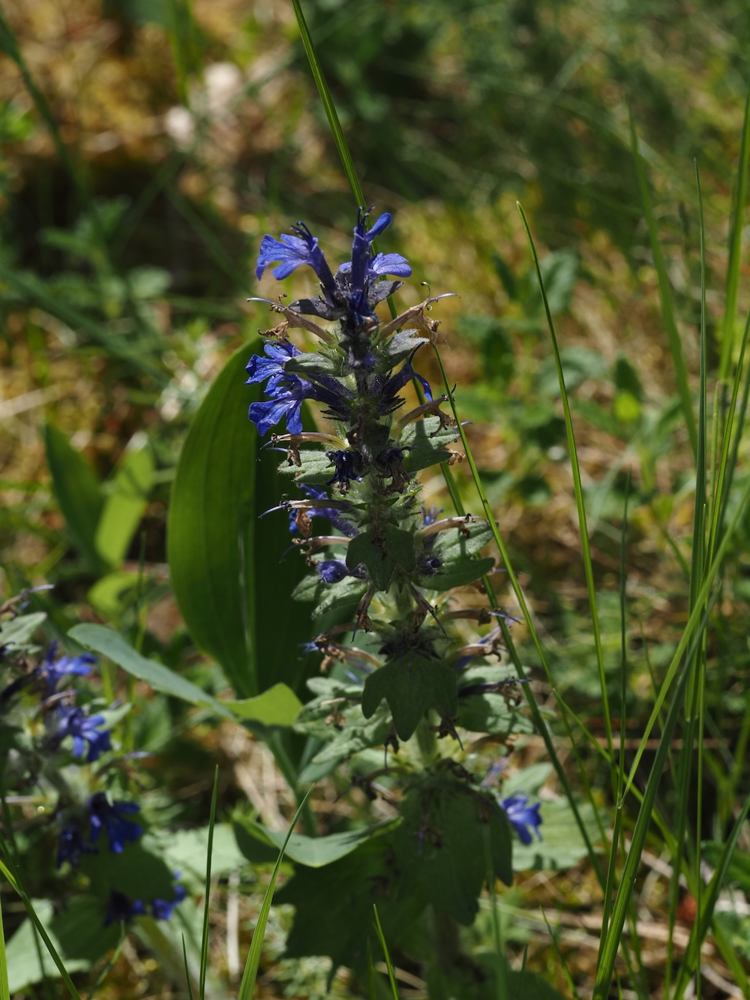
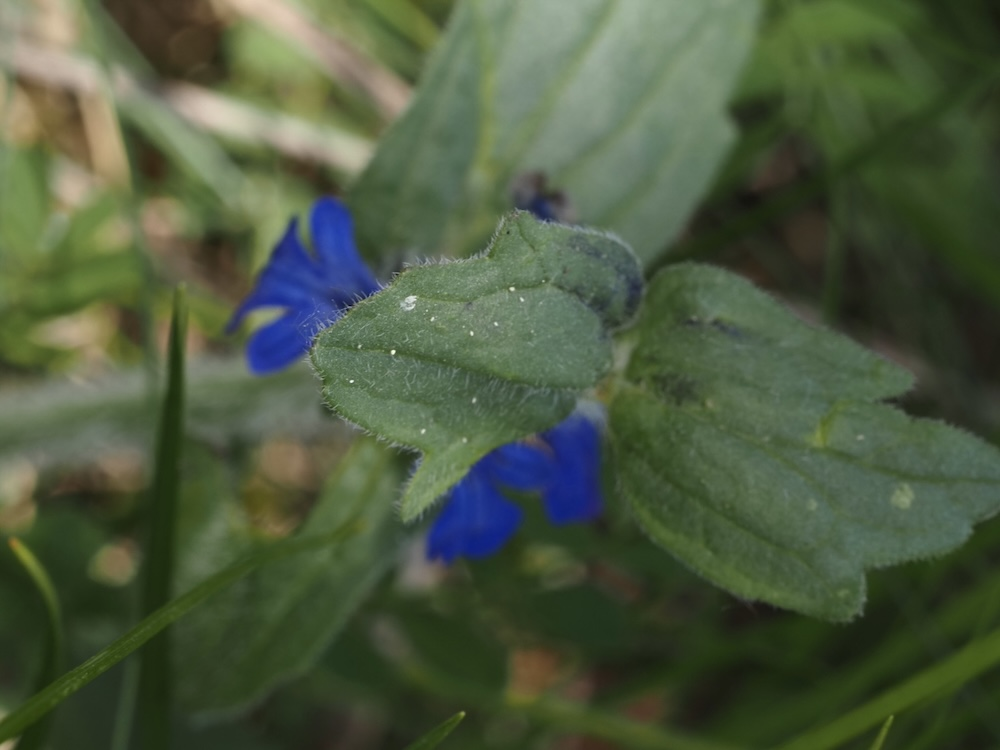

Blaue Kerzen auf magerem Grund
Von Mai an reckt der Genfer Günsel seine kräftig blauen Blütenähren über kurzem, trockenem Rasen empor. Anders als viele Frühblüher liebt er die volle Sonne und magere, oft kalkreiche Böden – Trockenrasen, Magerwiesen und sonnige Wegränder sind sein Zuhause. Die Lippenblüten sind übereinander zu einer „Kerze“ gestapelt; ihr Nektar steckt tief in der Blütenröhre und ist vor allem für Hummeln und langrüsselige Bienen gut erreichbar.
Der Günsel ohne Ausläufer
Wer ihn vom häufigeren Kriechenden Günsel (Ajuga reptans) unterscheiden will, schaut auf den Wuchs: Der Genfer Günsel wächst meist aufrecht und horstig und bildet – anders als sein kriechender Verwandter – kaum oder gar keine oberirdischen Ausläufer. Außerdem ist er insgesamt kräftiger behaart und bevorzugt deutlich trockenere, wärmere Standorte. Sein Artname erinnert an Genf, von wo die Pflanze einst wissenschaftlich beschrieben wurde.